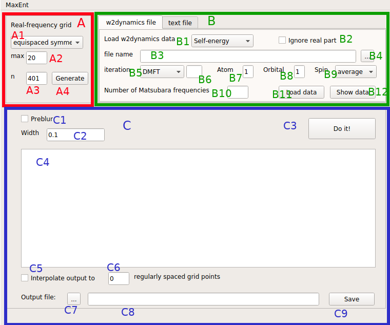
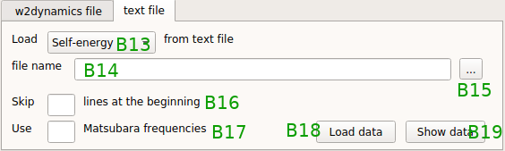
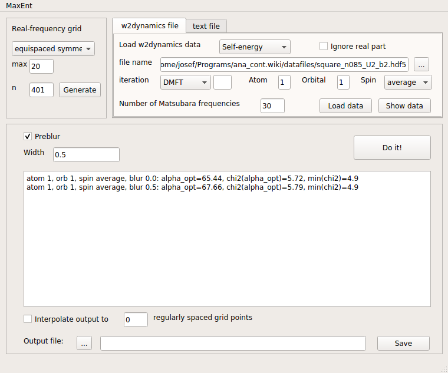
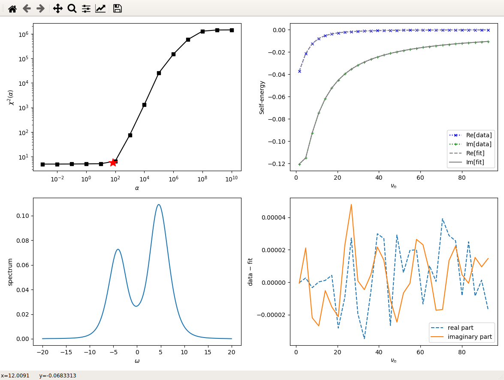
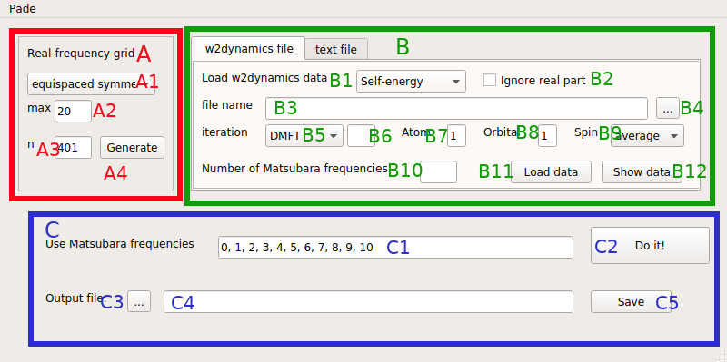
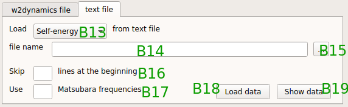
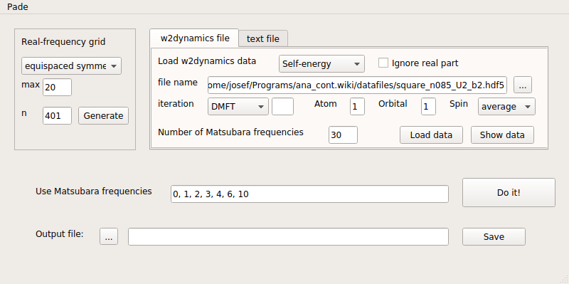
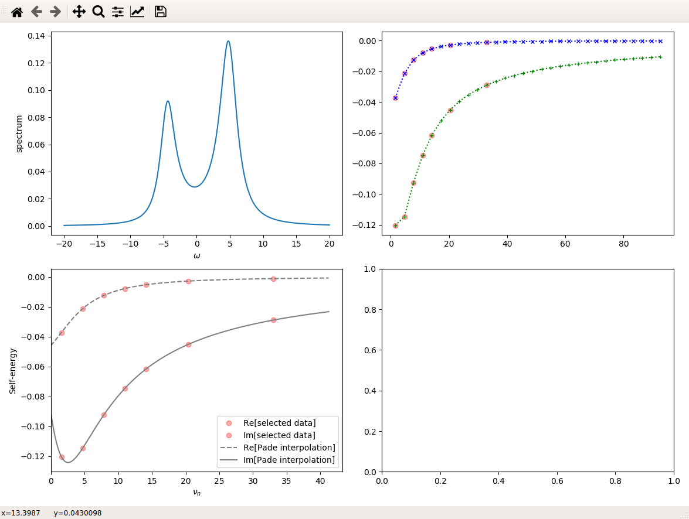
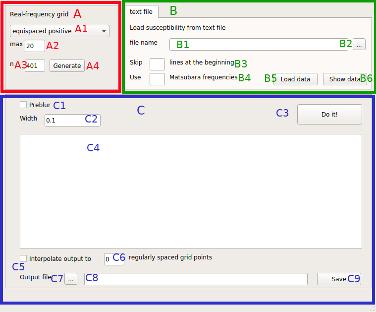

2. GUI documentation¶
2.1. Maxent for fermionic Green’s functions¶
2.1.1. Introduction¶
This application is an implementation of the standard algorithm of MaxEnt for fermionic quantities. Thus it can be used for the analytic continuation of one-particle Green’s functions and self-energies from Matsubara frequencies to real frequencies.
Before launching the program, I recommend to go to your preferred working directory, e.g. where you have stored the data that you want to continue.
Then you can start the program from the command line by
/path/to/ana_cont/scripts/maxent.py
and the main window of the application will appear on the screen.
First, we will now have a look at the main window and explain its features.
At the end of this page, there is also a tutorial.
2.1.2. The main window¶
{kind=link}
The main window consists of three parts, which are marked by red (A), green (B) and blue frames (C).
2.1.2.1. Real-frequency grid¶
In frame A you can edit the real-frequency grid. The menu A1 provides a choice between equispaced symmetric and centered symmetric. Both options cover an interval that is symmetric with respect to zero, but the latter has a higher density of grid points at low frequencies. In the text-edit field A2 the cut-off of the real-frequency interval is specified. For example, wmax=20 means that the interval goes from -20 to 20. The following field A3 concerns the number of grid points. If it is an even number, 0 will not be contained, so I recommend using an odd number. Once you have edited the real-frequency grid, click on the “Generate” button A4 and your grid is set.
2.1.2.2. Input data¶
In frame B you can load the input data. There are two supported file formats for this, namely w2dynamics files and text files. There is a tab for each of them.
2.1.2.2.1. w2dynamics input data¶
In the menu B1 you have to choose if you want to load a self-energy or a Green’s function. In the case of a self-energy the Hartree term will be subtracted automatically. If the checkbox B2 is checked, the real part of the data is ignored. This feature is used to restore particle-hole symmetry that is violated by a real part of zero plus noise. If you’re not 100% sure that the real part must be zero in your case, don’t use this feature!
In the text-edit field B3 the name of the input file is specified. Importantly, the absolute path has to be included as well. Since this can be annoying, there is also the file dialog button B4 that opens a file dialog. This lets you choose your input file in a more convenient way.
In the menu B5 you can choose between DMFT and STAT iterations. In B6 the iteration number can be provided, but if it is left blank, the last iteration is selected automatically. B7 selects the inequivalent atom. If you have only one atom in the unit cell or all atoms of the unit cell are equivalent, then it is always 1. In B8 you specify which orbital component is to be used (orbital-diagonal Green’s functions are assumed here.) For a single-orbital calculation is is always 1. In the “Spin” menu B9 you have the choice between “up”, “down” and “average”. The latter is preferred for paramagnetic calculations. For the number of Matsubara frequencies B10 no default value is provided, because it strongly depends on the problem at hand. If you are not sure about the necessary number, you can also vary it later. Please mind, if your w2dynamics file does not contain the QMC error bars, they are set to a constant value automatically.
Now you can load the data by clicking the button B11. To check if everything is alright, I strongly recommend to also click the button B12 that opens a simple plot of the data. There you can inspect, e.g., if the Hartree term is subtracted correctly. Also it will give you an impression whether you have loaded enough (or too many) Matsubara frequencies. If, for example, you conclude that you need a different number of frequencies, just edit the number in B10, and again click B11 and B12. (Of course also the other settings can be changed in the same way.)
2.1.2.2.2. Text input data¶
In order to load input data from a text file, select the tab “text file”.
{kind=link}
First, select if you load a self-energy or a Green’s function in the menu B13. Note that here it is not possible to automatically subtract the Hartree term, but the choice “Self-energy” will have some influence on the postprocessing later. This means that in a text file you have to provide data in a form that is ready for analytic continuation:
Only positive Matsubara frequencies
Real part of the data approaches zero at high frequency.
Then, in B14, the file name is specified, but it can also be selected in the file dialog that is opened upon clicking the button B15. The file needs to have four columns:
Matsubara frequency (really the frequency value, not an index!)
real part
imaginary part
error bar
Additionally you have the option to ignore some comment lines at the beginning of the file by setting B16. If you leave it empty, all lines of the file will be read. Also, you can reduce the number of Matsubara frequencies to use by setting B17. If you leave it empty, all Matsubara frequencies will be read. If you do not know the error bars of your data, you may write a constant value of, e.g., 0.001 in the file. Then you can load the data by clicking B18 and look at them by clicking B19.
2.1.2.3. Work space¶
Let us now turn to frame C, the work space area. If you check C1, preblur will be used, where the width of the Gaussian is specified in C2. If you press the button C3, the analytic continuation for the given data and settings is done. As a result, a line with optimal alpha and chi-squared values is printed in C4, and a plot window appears. How to deal with this output is described in the tutorial.
If you are not yet happy with the result of the analytic continuation, you can edit all settings in frame A (don’t forget to click on “Generate”!) and in frame B (don’t forged to click “Load data” and “Show data”!). Also C1 and C2 can be edited, of course. Then click the “Do it!” button C3 and see what you get.
Once you arrived at a satisfactory result, you can save it to a text file. In some cases, especially if you used a “centered” real-frequency grid, you may want to store the result on a different grid. To do so, check C5 and set the number of regularly spaced grid points C6. Then the output data are interpolated to such a grid.
Then, select an output file after clicking C7 or type it manually in C8 (again with absolute path.) Importantly then click the button “Save” (C9), otherwise the results are not saved. (Unfortunately, in the file dialog there is also a “Save” button, but it merely sets the file name and does not save anything.)
Now your choice of B1/B13, self-energy or Green’s function, comes into play. If you have continued a self-energy, its full analytic form with real part is calculated by a Kramers Kronig transformation. In case of w2dynamics input data, also the Hartree term is added. The output file then has 3 columns:
real frequency
real part
imaginary part (-pi * “spectrum”)
If you have continued a Green’s function, such a transformation is usually not required and simply the spectral function is saved to a 2-column file:
real frequency
spectral function
Once you have saved the output you can load different data, e.g. just the next orbital component of your self-energy, and do the continuation. There is no need to restart the application.
2.1.3. Tutorial: square lattice Hubbard model¶
Let us consider the DMFT self-energy for a square-lattice Hubbard model with U=2t, T=t/2 and 15% hole doping. This is a rather simple DMFT calculation, but for a tutorial is is fine. The w2dynamics output file can be downloaded here.
We first do a calculation without preblur, then we set it to 0.5. Here is the application window:
{kind=link}
As you can see, there are two lines in the text output field, because we have done two calculations. Each line contains, for identification, the atom, orbital and spin quantum number. Then the blur width is printed. As output quantities it contains the optimal value of alpha, the chi-squared deviation at this optimal alpha, and the minimal chi-squared deviation (at the smallest value of alpha that was used.) We can see that in this case, the preblur does not significantly change the quality of the fit, since the minimal chi-squared deviation is unchanged.
And here is the plot for the latter case, with preblur:
{kind=link}
The top left panel shows the dependence of the chi-squared deviation on alpha. The determined optimal value is marked by a red star. The bottom left panel shows the “spectrum” of the self-energy, i.e. -Im(Sigma)/pi. We see that it has the characteristic weak-coupling form, but it is asymmetric due to the doping.
The top right panel shows the Matsubara-frequency data (crosses) and the fit (lines). Since the data are quite precise, we can not see a difference without zooming. However, plotting the difference between data and fit is more instructive, see bottom right panel. Indeed, the data are fitted very well and the deviation of the data from the fit looks like noise.
Let me also remark that the plot is generated by matplotlib. This means that you can use the toolbar in the top left corner or the usual matplotlib hotkeys, e.g. for zooming. You can therefore also simply save the plot from there.
Of course, you can also try to continue the Green’s function instead of the self-energy. Also there is a file for the same model at the same U and T, but at half filling.
2.2. Pade Method for analytic continuation¶
2.2.1. Introduction¶
This application is a user interface for analytic continuation by means of Pade interpolation. It can be used for analytic continuation from fermionic or bosonic Matsubara frequencies to real frequencies.
Before launching the program, I recommend to go to your preferred working directory, e.g. where you have stored the data that you want to continue.
Then you can start the program from the command line by /path/to/ana_cont/scripts/pade.py and the main window of the application will appear on the screen. First, we will now have a look at the main window and explain its features. At the end of this page, there is also a tutorial.
2.2.2. Main Window¶
Basically, the main window is very similar to the main window of MaxEnt. Therefore we will not again describe every widget, just the ones differ from MaxEnt.
 {kind=link}
{kind=link}
In the data type menu B13, there is now a third possible choice: “bosonic”. For bosonic data, the text input file contains only three columns:
Matsubara frequency
Data (real)
Error
There is no column for the imaginary part, since susceptibilities are real. Note that the error column still has to be present, although the error bars cannot be used in Pade.
The most visible difference of the user interface concerns frame C. In the line edit field C1 it is necessary to write the indices of the Matsubara frequencies that should be used for the construction of the Pade coefficients. Note that the computation time starts to considerably increase when using more than about 25 frequencies. The real-frequency grid in this case is merely the grid, at which the Pade approximant is evaluated. Therefore it is not in principle necessary to cover the whole band width, and spacing is not critical.
2.2.3. Tutorial¶
As a short tutorial, we consider the same doped square-lattice Hubbard model as in the MaxEnt tutorial.
For this choice of frequencies,
{kind=link}
we get this plot:
{kind=link}
Note that some Matsubara frequencies can be left out for constructing the Pade approximant. In the fermionic case, it however seems to be important to use an odd number of data points on the Matsubara axis.
The output plot shows, in the top left panel, the resulting spectral function. In the top right panel, we show the loaded data, and the frequencies used for the Pade interpolation are marked by opaque red dots.
The bottom right panel shows a plot with the selected Matsubara frequencies and the interpolation that is given by the Pade approximant. The Pade approximant is a rational function that can be evaluated, in principle, on the whole complex plane. Ideally, it has poles only in the lower half-plane. If your data are noisy, or for some reason the selection of Matsubara frequencies is not good, the gray lines will show some features between the interpolated red dots. This means that there are poles close to the positive Matsubara axis. Although without such poles, noisy data can hardly be interpolated, they will result in strange features of the spectral function, especially if they are close to the real axis. Therefore, try to find a combination of Matsubara frequencies, where this does not occur. Alternatively, if the data are too noisy, better use MaxEnt or get better data (which I recommend!).
2.3. Maxent for bosonic Green’s functions¶
2.3.1. Introduction¶
This application is an implementation of the standard algorithm of MaxEnt for bosonic quantities. Thus it can be used for the analytic continuation of physical susceptibilities from Matsubara frequencies to real frequencies.
Before launching the program, I recommend to go to your preferred working directory, e.g. where you have stored the data that you want to continue.
Then you can start the program from the command line by /path/to/ana_cont/scripts/maxent_bosonic.py and the main window of the application will appear on the screen. In the following, we will explain the difference of the user interface with respect to the fermionic continuation application.
2.3.2. Main Window¶
The main window is very similar to the main window for fermionic continuation:
{kind=link}
An important difference is that on the real axis, only positive frequencies are used. Nevertheless the user can choose to make them equispaced or “centered”, i.e. denser at lower frequencies.
Furthermore there is no option for direct read-in from w2dynamics files, since there is no unified format for susceptibilities. Instead, better export your susceptibilities to text files with three columns:
Matsubara frequency
Value (real)
Error bars.
The Matsubara frequencies start at 0 and are really the values of the frequencies, not indices. Due to the properties of the bosonic kernel (or causality of susceptibilities) the data are purely real.
The output quantity is not directly the susceptibility, but rather -Im(chi)/(omega * pi). Thus, in many cases you may have to multiply the result with omega. However it is more general to output chi/omega, since then also the value at 0 is stored. Otherwise, multiplying it by omega, it is always zero and the information is lost.
Problur is also implemented for the bosonic continuation and basically works. I recommend the same workflow as in the fermionic continuation, but want to emphasize that there is no experience yet.